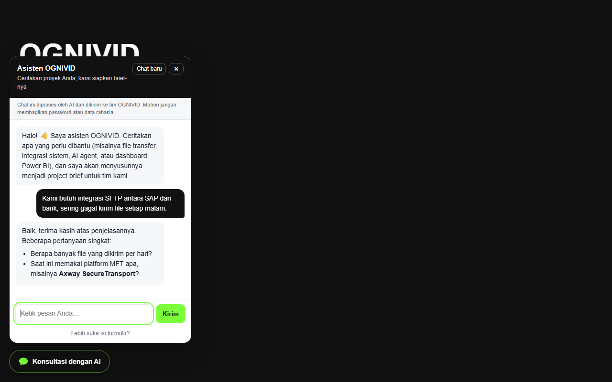

Ringkasan eksekutif
OGNIVID AI Assistant adalah plugin WordPress yang mengubah pengunjung website menjadi calon klien dengan kebutuhan yang jelas. Asisten AI mewawancarai pengunjung layaknya konsultan berpengalaman, merangkum kebutuhannya, meminta konfirmasi, lalu mengirim Project Brief terstruktur ke tim OGNIVID sebagai email HTML dengan lampiran PDF.
Secara bawaan plugin memakai Claude, bisa dipindah ke penyedia AI lain, dan otomatis beralih ke formulir singkat saat AI tidak tersedia, sehingga tidak ada permintaan yang hilang. Setiap brief juga tersimpan secara privat di wp-admin.
Cara kerja
Pengunjung membuka chat
Tombol “Konsultasi dengan AI” muncul di setiap halaman, sesuai bahasa halaman.
AI mewawancarai pengunjung
Satu atau dua pertanyaan terarah setiap kali: masalah, tujuan, sistem saat ini, batasan, urgensi, target waktu, anggaran, dan data kontak.
Pengunjung mengonfirmasi ringkasan
Asisten menampilkan ringkasan singkat dan baru melanjutkan setelah pengunjung mengonfirmasi atau mengoreksinya.
Brief dikirim
Model memanggil tool submit_project_brief dengan skema JSON ketat; server memvalidasi nama dan email sebelum menerimanya.
Brief disimpan dan dikirim
Disimpan di AI Briefs, dibuat PDF, lalu dikirim ke OGNIVID (beserta transkrip) dan ke pelanggan (beserta link WhatsApp).
Formulir cadangan
Jika AI mati, saldo habis, error, atau melewati batas harian, brief yang sama dikumpulkan lewat formulir singkat.

Arsitektur solusi
Project Brief
Setiap brief, baik dari AI maupun formulir, memakai skema yang sama dan ditulis dalam bahasa pelanggan.
| Kolom | Isi |
|---|---|
customer | Nama, email, perusahaan, telepon/WhatsApp, jabatan |
title · summary | Judul proyek singkat dan ringkasan eksekutif 2–3 kalimat |
problem | Masalah dalam kata-kata pelanggan sendiri |
goals · requirements | Seperti apa keberhasilan dan apa yang harus dilakukan solusi |
current_systems | Platform dan tools yang sudah dipakai |
constraints | Tenggat, anggaran, kepatuhan, keamanan |
urgency | low · medium · high · critical (high/critical ditandai di subjek email) |
timeline · budget | Target waktu dan kisaran anggaran |
suggested_services | Managed File Transfer, Integration & AI Agents, Data & Dashboards, Lainnya |
initial_recommendation | Ide awal singkat yang tidak mengikat |
open_questions | Hal yang masih perlu diklarifikasi tim |
Fitur
Wawancara konsultatif
Balasan singkat, pertanyaan lanjutan yang terarah, sekitar 6–10 pertanyaan, lalu ringkasan untuk dikonfirmasi.
Email + PDF
Email HTML yang rapi dan PDF A4 untuk tim, plus salinan untuk pelanggan.
Inbox di wp-admin
AI Briefs menampilkan setiap brief beserta pelanggan, urgensi, sumber, dan status, badge pesan baru di menu, filter status, transkrip lengkap, unduhan PDF yang terlindungi, catatan internal, serta balas sekali klik lewat email atau WhatsApp.
Dua bahasa
Mengikuti bahasa halaman (Inggris atau Indonesia) dan berpindah mengikuti pengunjung.
Tidak terkunci provider
Claude secara bawaan; OpenAI (model ChatGPT), Google Gemini, Mistral, DeepSeek, xAI Grok, Groq, OpenRouter, atau endpoint OpenAI-compatible lain sebagai alternatif.
Tidak kehilangan calon klien
Formulir cadangan otomatis saat AI tidak tersedia atau batas tercapai.
Keamanan & privasi
Key tetap di server
API key disimpan di opsi WordPress, tidak pernah dikirim ke browser, dan tidak ditampilkan kembali di halaman pengaturan.
Riwayat di server
Percakapan disimpan di transient server; pengunjung tidak bisa menyisipkan balasan asisten palsu. Blok thinking Claude dikirim ulang tanpa diubah.
Batas penyalahgunaan
Cek same-origin, batas pesan per percakapan, pesan per IP per jam, batas AI harian per situs, honeypot, dan waktu isi minimum di formulir.
Output terstruktur ketat
Tool brief memakai skema ketat dan divalidasi serta disanitasi ulang di server sebelum disimpan atau dikirim.
PDF privat
PDF disimpan di folder uploads yang diblokir dan hanya bisa diunduh lewat link admin yang dilindungi nonce.
Transparan ke pengunjung
Widget menyatakan bahwa chat diproses oleh AI dan meminta pengunjung tidak membagikan password atau data rahasia.
Instalasi
- Unduh
ognivid-ai-assistant.zipdari rilis GitHub terbaru (ataugit clonerepository kewp-content/plugins/ognivid-ai-assistant). - Di wp-admin buka Plugins → Add New → Upload Plugin, unggah ZIP-nya, lalu aktifkan OGNIVID AI Assistant.
- Buka Settings → OGNIVID AI Assistant. Plugin dimulai dalam mode uji (hanya admin).
- Pilih penyedia AI, tempel API key-nya (misalnya dari console.anthropic.com atau platform.openai.com), atur email penerima, lalu simpan. Tanpa key, asisten berjalan dalam mode formulir.
- Pastikan WordPress bisa mengirim email (misalnya dengan WP Mail SMTP), uji satu brief, lalu matikan mode uji.
- Tindak lanjuti dari AI Briefs: brief baru ditampilkan tebal dan dihitung di badge menu; membukanya menandainya sebagai sudah dibaca, dan kotak Follow-up mencatat status (New, Read, Contacted, Proposal sent, Won, Closed) serta catatan internal.
Kebutuhan: WordPress 6.x, PHP 7.4+ (diuji di PHP 8.2), koneksi HTTPS keluar dari server, dan pengiriman email yang berfungsi.
Cara penggunaan
Pengunjung
- Klik Konsultasi dengan AI (kiri bawah) di halaman mana pun.
- Ceritakan proyeknya dan jawab pertanyaan asisten. Tidak ingin chat? Klik Lebih suka isi formulir?.
- Periksa ringkasannya, konfirmasi, lalu terima nomor referensi di layar dan salinan brief lewat email.
Pemilik situs
- Brief baru masuk lewat email (dengan PDF) dan muncul di wp-admin → AI Briefs dengan angka di menu.
- Buka brief untuk membacanya (otomatis ditandai sudah dibaca), unduh PDF, dan baca transkrip percakapannya.
- Pakai Reply by email atau Chat on WhatsApp di kotak Follow-up, lalu atur status (Contacted, Proposal sent, Won, Closed) dan tambahkan catatan internal.
- Pakai filter status di atas daftar untuk melihat brief baru atau yang masih terbuka saja.
Mengganti penyedia AI
- Pilih penyedia di Settings → OGNIVID AI Assistant, tempel API key dari penyedia tersebut dan ketik salah satu ID modelnya, lalu simpan.
- Buka situs sebagai admin dan kirim pesan uji. Jika chat berpindah ke formulir, berarti key, ID model, atau saldonya bermasalah; penyebabnya ada di PHP error log.
Referensi pengaturan
| Pengaturan | Bawaan | Fungsi |
|---|---|---|
| Tampilkan asisten | on | Saklar utama widget |
| Mode uji | on | Hanya administrator yang login yang bisa melihat dan memakai asisten |
| Penyedia AI | Anthropic | Anthropic, OpenAI, Gemini, Mistral, DeepSeek, xAI, Groq, OpenRouter, OpenAI-compatible kustom, atau Off (hanya formulir) |
| Model | claude-opus-5-5 | ID model apa pun dari penyedia terpilih; ganti saat berpindah penyedia (misalnya model GPT untuk OpenAI). Claude Sonnet 5.5 / Haiku 5.5 lebih hemat daripada Opus. |
| Effort (Claude) | medium | Kedalaman berpikir: low, medium, atau high |
| Kirim brief ke | hello@ognivid.com | Inbox pemilik; salinan opsional ke pelanggan |
| Nomor WhatsApp | 62852… | Link tindak lanjut untuk pelanggan |
| Posisi tombol | kiri bawah | Menghindari tumpang tindih dengan tombol WhatsApp di kanan |
| Batas | 25 · 1500 · 40 · 60 | Pesan per percakapan · karakter per pesan · pesan per IP per jam · percakapan AI per hari |
Penyedia AI
| Penyedia | Cara pemanggilan | Catatan |
|---|---|---|
| Anthropic Claude | Messages API (/v1/messages, versi 2026-10-21) dengan tool ketat, prompt caching, dan fallback refusal di server | Disarankan. Bayar sesuai pemakaian; atur batas pengeluaran bulanan di Console. |
| OpenAI (ChatGPT) | Chat Completions API (api.openai.com/v1/chat/completions) dengan function calling | Pakai ID model GPT dari akun OpenAI Anda. Key: platform.openai.com → API keys. Langganan ChatGPT Plus tidak termasuk akses API. |
| Google Gemini | Endpoint OpenAI-compatible | Ada versi gratis; cek ketentuan penggunaan datanya sebelum mengirim data pelanggan. Key: aistudio.google.com. |
| Mistral AI | Endpoint OpenAI-compatible (api.mistral.ai) | Penyedia asal Eropa. Key: console.mistral.ai. |
| DeepSeek | Endpoint OpenAI-compatible (api.deepseek.com) | Biaya rendah. Key: platform.deepseek.com. |
| xAI (Grok) | Endpoint OpenAI-compatible (api.x.ai) | Model Grok. Key: console.x.ai. |
| Groq · OpenRouter | Endpoint OpenAI-compatible | Model open source, kuota gratis yang sering berubah. OpenRouter memberi akses ke ratusan model (termasuk GPT, Claude, Llama) dengan satu key. |
| Kustom | URL /chat/completions OpenAI-compatible apa pun | Untuk model self-hosted (misalnya Ollama di balik gateway). |
| Off | Tanpa AI | Hanya formulir, gratis selamanya. |
REST API
| Endpoint | Request (JSON) | Response |
|---|---|---|
POST /wp-json/ognivid-ai/v1/chat | { sid, message, lang } | { sid, reply, done, mode }, dengan mode: "form" meminta widget menampilkan formulir |
POST /wp-json/ognivid-ai/v1/form | { name, email, company, phone, title, problem, systems, service, urgency, timeline, budget, lang, ts, website } | { ok, reply } |
Kedua endpoint hanya menerima request dari situs yang sama. Dalam mode uji, keduanya juga membutuhkan administrator yang login (widget mengirim REST nonce).
Komponen
| File | Tanggung jawab |
|---|---|
ognivid-ai-assistant.php | Bootstrap plugin dan hook |
includes/class-oaa-settings.php | Halaman pengaturan, nilai bawaan, dan sanitasi |
includes/class-oaa-provider.php | System prompt, skema brief, adapter Claude dan OpenAI-compatible |
includes/class-oaa-chat.php | Endpoint REST, sesi, batas, pemuatan widget |
includes/class-oaa-brief.php | Post type AI Briefs, PDF, email HTML, tampilan admin |
assets/widget.js · widget.css | UI chat dan formulir (tanpa dependensi) |
includes/fpdf/ | Library FPDF 1.9 untuk membuat PDF (lisensi permisif tersendiri) |
Pemecahan masalah
| Gejala | Yang perlu dicek |
|---|---|
| Tombol tidak muncul | Mode uji aktif (login sebagai admin), asisten dimatikan, atau cache halaman masih menyajikan versi lama. |
| Chat langsung menampilkan formulir | API key belum ada, penyedia diatur Off, saldo habis, atau batas harian tercapai. Error dicatat di PHP error log dengan awalan “OGNIVID AI Assistant:”. |
| Brief tersimpan tetapi email tidak masuk | Kirim tes dari WP Mail SMTP → Tools. Jika berhasil, cek folder spam, forwarder di mailbox penerima, dan cara mailbox tersambung ke aplikasi email (IMAP). |
| PDF tidak ada | Folder uploads harus bisa ditulis; email tetap terkirim tanpa lampiran. |
Rencana pengembangan
- Notifikasi WhatsApp untuk brief baru (via penyedia WhatsApp Business API).
- Balasan streaming agar respons terasa lebih cepat.
- Membalas brief dan melacak statusnya langsung dari wp-admin.
- Analitik sederhana: jumlah percakapan, tingkat penyelesaian, dan layanan terpopuler.